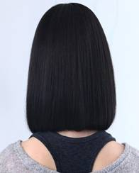
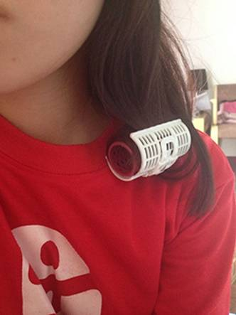
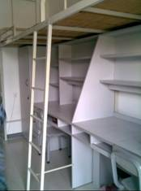

- 军训攻略
- 大学First Day
- 抵玩华师
- 学の华师
- 食の华师
- 住の华师
- 行の华师
- 华师の景
- Ucity简介
- Ucity2014年成就
军训·头发篇
背景：每一年高考完，多少妹子怀着高考后终于能够留及腰长发的心，多少妹子顶着一头乌黑亮丽的长发，多少妹子想着在踏进大学之前好好装扮自己的头发，填报了华南师范大学之后，才发现原来华南师范大学的传统是军训女生要剪头发！虽然，在录取通知书抑或是新生手册上都没有明文规定要剪头发，但是为了要为人师表，华师的军训传统便是女生不过肩黑短发，男生黑色平头。通常申报不剪头发成功的理由是关于宗教信仰又或者是民族习惯问题，没有这些理由的小伙伴，不妨看了小编的tips再作出适合的选择吧。
女生标准：

后果：虽说不会对个人的成绩有直接影响，但是会有很多无形的压力，例如，周围的人都剪头发了，你的兼班会催你剪头发，军容检查的时候整个连就因为个人头发的问题被扣整连的分，辅导员会因为头发的问题提早认识了你，有可能会当学院全体的面通报批评……
Tips one：头发长短问题
- 剪短到碰肩或者稍微过肩的时候去电梨花头，也就是内扣，这样子就会看起来比较短，等到军训过后可以选择去拉直或者就梨花头萌妹子下去。本来刚电了一头长卷发的妹子，可以剪剩最后一度卷，在军训的时候每晚睡觉用发卷卷住头发睡觉，因为小编是这样子的，所以军训开始到现在小编头发都是班级最长的。直发妹子也可以试下卷一晚上发卷能否奏效，也可以仿效。详细的如右图：

- 实在不愿意剪掉一头长发的，为了你的长发，可以选择用假发。但是，小编个人而言不太建议使用假发。不说在军训训练期间，假发一不留神掉落的情况会发生，小编有朋友顶着假发度过了整个军训之后后悔没有直接剪头发，因为假发会很闷很热，还可能头皮长疹。不过，为了你心爱的长发，你付出了代价，别的剪了头发的女生也不好说你什么了。每一年都会传出“今年可能不用剪头发”之类的话，但是，还是妹子最后还是变成了短发妹子。所以，如果下定决心剪头发了，小编建议在家里比较好的理发店整理好头发再来学校，或者找好路线在军训前几天有空余时间出去广州市区较好的理发店剪头发，军训期间，学校生活区的发廊迎来了生意旺季，即使是女生的头发，基本上都一刀剪过去，小编就很后悔为了应付兼班随便去修发尾，修完之后，电的头发会翘得很有“艺术感”。至于男生剪平头，小编咨询了身边的男同学们，得出了一个真理：平头是检验帅哥的机会，长得帅就是你的tips。
Tips two：头发颜色问题
- 头发颜色是规定要黑色的，如果头发颜色明显被看出来染过的，辅导员看到之后会单独找你谈话。染回去的颜色可以选择是深棕色等深色系列的颜色，在阳光下不会太明显看出染过的，可以坚持说自己原来发色就是这样的。
- 如果你想保留原来发色、或者实在来不及去挑选染另种颜色的小伙伴可以选择只染头发表层，而且上染色膏之后时间逗留等待的时间逗留短一些，等到军训之后，头发洗多了，原来的颜色自然就回来了。小编不建议在学校生活区染发，因为小编军训的时候就是在某一天晚上9点多军训完之后突然被告知第二天要军容检查，时间太紧来不及买染发膏自己染，唯有在学校染。染了之后，头发大伤，小编从前折腾了头发很多次都不会有分叉等情况发生，自从那次急忙染了头发表层之后，头发就出现了很多分叉，对头发伤害极深。
- 如果只是染表层，可以选择几个人购买一支染发剂；如果是打算换深色系的颜色，可以自己用一支染发剂。有意的可以选择离我们学校较近的新天地的万宁购买染发剂，找师兄师姐问清楚怎么去新天地，走路时间大概20分钟，也可以选择乘摩托车去，直接跟司机说地点是中大校区附近的新天地就好了。小编听朋友介绍，染深色的染发剂可以选择欧莱雅牌子，另外，花王牌子的染发剂也不会太伤头发，在万宁都有得购买。
- 实在不想太伤头发的可以选择买一次性染发喷，小编曾经打过这个念头，但是时间紧迫，走遍了新天地都买不到一次性染发剂。最多只有一家发廊可以允许帮我们在店内喷完头发。如果采取这打算的小伙伴，小编建议自己来学校之前准备好一次性染发剂。但是小编不建议这举措，因为军容检查是在下午的，各个排列队等待军官检查头发的时候是站军姿，会出汗，一次性的染发剂可能会融掉。
总结：以上是小编的经验总结，来了华师，就要做好头发保卫战的决心。有多爱，就要下多的功夫。不过，其实短发妹子也有好处的，帮自己换个形象，说不定效果更佳。其次，看头发长短是辨认出师姐师妹的方法，师妹更受照顾，尤其是师兄的照顾。小编在此希望自己的小小tips能够帮助到大家，打个漂漂亮亮的头发保卫战。
军训·军服篇
军训有特定的军服，在军训开始前会有一天时间在学校内指定的地方购买军服。
基本装备组成：迷彩短上衣、迷彩长外套、迷彩长军裤、迷彩军鞋、腰带、军帽、军徽、肩章、白手套
Tips：
1、基本装备的价格（一套）63元左右，到时候会根据需要厂商有不同的套餐，例如一套基本装备+一套迷彩服，不同的搭配套餐价格不一样。
2、军服的需求，小编只是购买了一套基本装备就可以了，因为军服很薄，晚上洗了，吹一晚上就能干了，可以临睡前把衣服晾在宿舍内，风扇更易吹干。
3、准备黑长袜，军容检查和平时的训练都会要求穿黑长袜。
4、领到军鞋的时候，吊着的绳子要看清楚，小编的闺蜜一下兴奋就扔掉了绑住鞋子的绳子，（其实那是鞋带）...
5、准备针线，军服很脆弱，小编是女生，训练强度不及男生，但是军服还是光荣的开洞了。
6、军鞋很硬，有条件的可以提前准备好质量好点的厚鞋垫。还有一样军训垫鞋神器---普通鞋垫+卫生巾（M巾），男生也不用害羞，刚开学的时候大家对于男生买M巾还是比较理解的。小编当初换的比较勤，两天换一次新的M巾。越便宜的M巾越适合军训，因为够厚，记得别买超薄哦。（参考长度：235mm=37码，240mm=38码）
军训·where&when篇
据小编个人亲生经历，军训一般是报道后两三天后开始，然而亦有资料显示军训时间9月
8—28号，所以，什么时候开始军训都在那，随遇而安吧
1、军训时间一般在上午，下午，晚上
2、上午一般要六点多起床，七点或七点半集合直至中午11点或12点，这由教官决定
3、中午12点到2点休息
4、下午2两点集合训练到四点或五点，同样看教官
5、晚上吃完饭休息会，大概也是七点集合到晚上九点左右结束
以上为小编上年的经历，不过也是大同小异啦
注：一开始都会比较辛苦，训练也会比较严格，后来会慢慢越来越好的啦，大家莫担心！
一般军训一周会有一天或半天休息时间！！！
军训·内务篇
如果你不是跟师兄师姐一起住，那么恭喜你，内务是在军训间的另一“天堂”：
1、桌面保持整洁，即在检查的时候桌面只能存在一本军事理论和另一本书（小编忘了什么书了…）和一支笔，原稿纸（要写日志）
2、地面不能有头发
3、桌面要一成不染，即白手套在桌面等各角落抹过都是白白的。
4、厕所，阳台要刷干净
5、衣服的衣架要统一朝向，各种类型的衣服有规定的位置晾晒，毛巾也应该统一朝向和折叠，水桶摆放等这些到时教官或兼班都会来说明。
6、书桌上有两个可以锁的柜子，一个是书桌的抽屉，一个是衣柜，里面是可以放东西的（因为你锁上，教官也开不了）。其他地方都不允许放东西，所以师弟妹们无用的东西就别带了。
7、竹席可以用，但是蚊帐不能挂，不过可以带过来塞衣柜里。
8、床上的枕头和被子的折叠和摆放都有规定，这些到时教官或兼班都会说的
9、饮水机可以用，但是洗衣机不给用，所以不用急着买，而电脑就别带了，反正没网你也没地方放，没时间用。
10、无谓的东西就都国庆后再带，鞋子因为军训时有军鞋，所以只需带一对拖鞋和自己穿一双即可，然而过多的行李还是能寄放在师兄姐那，不过最好就不要麻烦他们啦。
11、桌面上，衣柜上，门上等等地方都需清理干净。即如果这上面有贴纸，呵呵呵。。那就恭喜你，请搞干净它！（风油精，吹风筒，刷碗的铁丝均可使用）
附图（在此上只能放一两本书，笔，原稿纸）
军训·防晒篇
1、防晒要全面，不仅脸部要防晒，唇部耳朵脖子也要防晒。唇部用专业的防晒产品，脖子一圈都要防晒。如果不注意全面防晒，军训完肌肤会不均匀，肌肤老化更快。
2、长时间的曝晒使得肌肤舒缓的时间少，所以一定要好好利用中午休息的时间，用湿毛巾敷下脸和脖子，减缓发红症状。中午要清洁干净肌肤并提前半小时擦防晒霜，为下午的军训做好准备。
3、在选用SPF50/PA+++或以上的防晒产品，同时要防汗效果佳的。如果汗水一下就带走了防晒霜，这样暴晒下肌肤会严重受损。
4、防晒霜要补擦，汗水已经带走了一些防晒霜，中间休息时间超过半小时，就马上又毛巾轻轻擦去汗水再补擦，中午是一定要重新再认真擦一遍。擦完可以擦点痱子粉，清凉有止汗。
5、大量喝水：最好加有葡萄糖的水或盐水，帮助你补充大量流失的水、糖分等，也舒缓肌肤的不适。
6、随身带防晒霜：如果有时间休息了，就尽量去阴凉处，擦下汗水，让肌肤也休息下。如有超过半小时休息，就赶紧补擦防晒霜。即使在阴凉处军训也不能放松警惕，防晒霜还是要擦和补擦。
军训·美白篇
美白方法：
1、要睡觉时，拿小黄瓜切雹放置脸上过几分钟拿下来，一个月您的脸就会白嫩。
2、睡前用最便宜的化妆棉加上化妆水完全浸湿后，敷在脸上20分钟，每周3次，您的皮肤会有想不到的水亮清透喔！！
3、每天起床喝2杯水，其中一杯加些盐巴，可以清肠胃。
4、出门前一定要擦隔离霜及防晒乳，回到家记得要马上卸妆。
5、先用温水再用冷水洗脸会让肌肤既干净且毛细孔会变小喔。
6、一定要多喝水不熬夜，少吃油炸类的东西，保持皮肤清洁。
7、每晚洗完脸后，将养乐多倒在化妆棉上，直接敷在两颊，甚至连额头、下巴 也可顺便敷上，不但去斑兼美白，因每次用量大约只有六分之一瓶的养乐多。
8、晚上少喝水，白天多喝水，睡前敷水亮面膜；多吃水果，不喝酒不抽烟不熬夜，保证水亮。
9、首先用冷茶包敷眼五分钟，接着做一个类似瑜珈的动作，这个动作是先盘腿，再将手举高后往前趴下，保持这个姿势约十分钟。这个动作一开始不容易做 到十分钟，要一段时间的练习，但是效果真的很好。
军训·零碎篇（特殊鞋垫&请假&防中暑）
鞋垫
1、选择一双码数略大的胶鞋。
2、将卫生巾撕去包装，贴于鞋底。
3、用剪刀将多出鞋底的卫生巾剪去。
提示：根据鞋的大小，尽量选择越大越厚的卫生巾。因为卫生巾的厚度将直接决定鞋的柔软度与吸汗度。
另：小编尝试过认为效果一般，如果可以，小编认为可以选择较厚且棉质鞋垫为佳，如果不够再加上卫生巾
请假（逃军训）：
适时装柔弱（特别为女生），
如果在经期期间不舒服要跟教官说（能休息多少是多少嘛）
在军训期间与同学打好关系，方便在逃军训时若有什么突发状况能通知你。（不过据小编所知，逃跑几率还是很低的）。
及时补充补充盐水，糖水，低糖;若不舒服要及时打报告休息！（出门前可往水中添加葡萄糖）
防中暑
中暑后的症状是：
面色苍白、大量出汗、头昏、耳鸣、眼睛发花、注意力不能集中、口渴、心慌、胸闷、脉博加快、全身无力。严重者：恶心、呕吐、四肢抽搐、呼吸困难、突然昏倒，甚至昏迷不醒。
在操场上军训时，当发现自己有以上某些症状时，应及时向军训教官或老师提出请假，自己或在别人帮助下马上到阴凉通风处坐下或仰卧休息，并解开衣扣、裤带，口服十滴水或霍香正气水或人丹之类的防暑药物，以及口服清凉饮料或凉盐开水。稍严重时，其它同学可帮助用冷水毛巾敷病人头部、胸部、腋下或两大腿根部，并用冷水擦四肢或全身皮肤，直至皮肤发红，还可人工向患者扇风，以吹风散热。这些措施对防止中暑的发生及发展都有着重要的意义，情况严重的，经上述处理后或立即送医院。
中暑是可以预防的，方法是：
1、在日晒下坚持戴帽；
2、防暑**提前服和随身带及时服；
3、及时喝凉开水或含盐饮料；
4、军训休息时减少追逐、跑、跳，以防止产热量过多；
5、有某些中暑的先兆症状时及时休息处理。
药物
因为在军训期间可能会受伤，所以自己可以随身携带红药水，止血贴，云南白药等类似药物。虽然兼班都会有，但兼班不可能时时刻刻都在，还是靠自己最实在！
军训·内容篇
一般，军训都少不了站军姿，稍息，立正，报数，跨立，停止间转法，原地踏步，齐步走的行进与立定，跑步走的行进与立定，正步走的行进与立定，敬礼，走方队，军体拳，在草丛中匍匐前进，拿枪匍匐等等，各个队列，教官的教学内容都各有不同，但总体是小编所说以上几种。在军训期间会有几次的军事教育，即在课室上课，不过有教官看着，相对较为轻松。一次约一个半到两个小时。
（部分图片转自网络）

Ucity简介
Ucity校园传媒是华南师范大学学生工作处指导下的实践、创新、培训基地。Ucity校园传媒致力于为广大学子提供各类校园资讯、计算机维修服务及大型校园活动策划实施等······